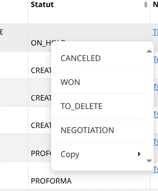
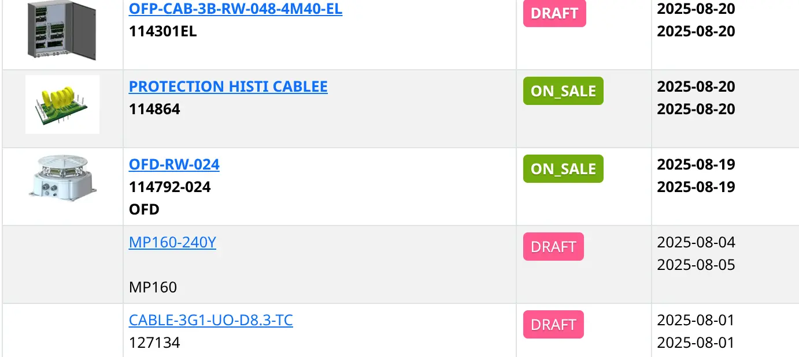
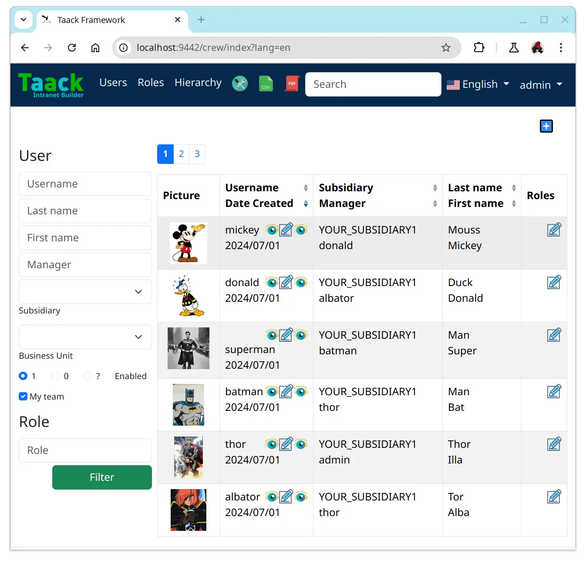
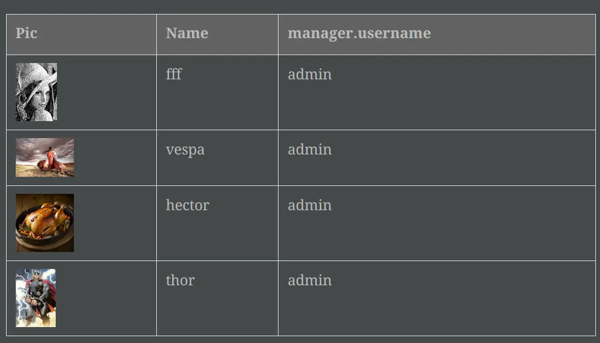
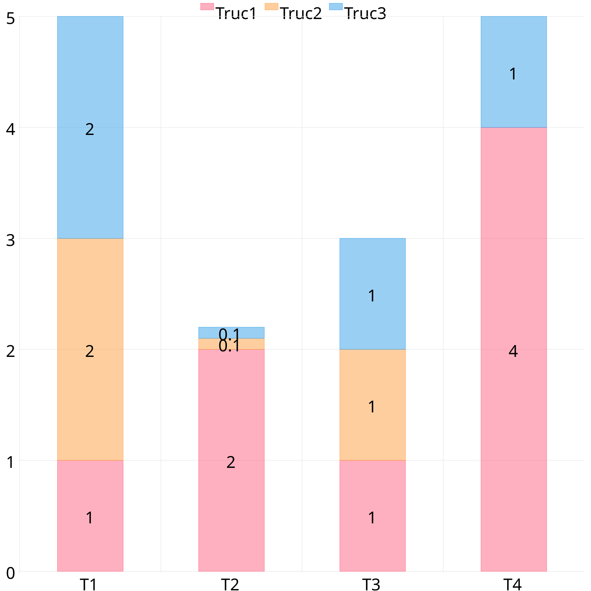

Version 0.7.0
-
Grails 7, Gradle 8.4, Java 24, Groovy 4.0.28 …
-
Improve Performances, start transmitting page earlier and should consume less memory per page
-
Split
taack-uiintotaack-ui,taack-ui-jdbc,taack-ui-pdf,taack-ui-ssh,taack-ui-search,taack-ui-asciidoc. Minimal server using onlytaack-uishould be a Jar around 70 MB in size -
Contextual Menus for fields and classes (See Contextual Menu Code Sample)
-
Notification helper: allow to mark unread rows on a table via
setLastReadingDatefilter setter. (See Create filter marking unread entries) -
SolrSearch changes: objects context have to be registered in a generic manner (See Register how an object will be shown)
-
New Diagram personalisation through builders easing mail and pdf diagram integration (See Diagram Builder)
-
Asciidoc Editor with copy/past capabilities (See Asciidoc Editor)
-
Improve Mail and PDF Diagram output
| 1 | Register a contextual menu for a field |
| 2 | Use Regular MenuSpecifier closure (as for any menus) |

TaackFilter.FilterBuilder tf = taackFilterService.getBuilder(Item)
.setMaxNumberOfLine(10)
.setSortOrder(TaackFilter.Order.DESC, i.dateCreated_)
tf.setLastReadingDate(lastAccessDateFromUser) (1)| 1 | Newest objects, will be bold, See Unread rows where object lastUpdated > lastAccessDateFromUser |

lastUpdated > lastAccessDateFromUserTaackGormClassRegisterService.register(
new TaackGormClass(ItemRange.class).builder
.setShowMethod(Bp2Controller.&showRange as MethodClosure) (1)
.build(),
new TaackGormClass(Item.class).builder
.setShowMethod(Bp2Controller.&showItem as MethodClosure) (1)
.setShowLabel({ Long id -> (2)
def i = Item.read(id)
return "${i.name} ${i.ref ?: ''} ($id)"
})
.setTypeLabel({ Long id -> (3)
return TaackUiService.tr('default.item.label')
}).build()
)| 1 | How to Show the Object |
| 2 | Custom Label |
| 3 | Type for Faceting |
new UiDiagramSpecifier().ui {
bar {
labels 'xLabel1', 'xLabel2', 'xLabel3', 'xLabel4'
dataset 'dataset1', 1.0, 2.0, 3.0, 4.0
dataset 'dataset2', 6.0, 1.0, 2.0, 4.0
option DiagramOption.builder
.setClickAction(Rma2Controller.&editClaim as MethodClosure)
// "diagramAction" was moved to here
.showDataCount()
// The numbers are hidden by default. Use this option if need to show
.hideLegend()
// The legends are shown by default. Use this option if need to hide
.setResolution(DiagramOption.DiagramResolution.DEFAULT_4K)
// Default resolution is [SVG: 960x480, PNG: 2160x1080].
// Allow to set to 540p, 720p, 1080p, 2K, 1440p, 4K
.setKeyColors(Color.RED, Color.BLUE)
// Allow to self-define the colors for each dataset
// (If not set, there are by default 7 colors)
.setTitle("Test Chart") // Diagram title
.build()
}
}//...
EditorOption.EditorOptionBuilder editor = EditorOption.getBuilder()
editor.addSpanRegexes(TaackBaseAsciidocSpans.spans) (1)
editor.addSpanRegexes(TaackAsciidocTable.spans) (1)
editor.addSpanRegexes(TaackAsciidocPlantUML.spans) (1)
editor.uploadFileAction(this.&dropEditor as MC, cmsPage.id) (2)
fieldEditor cmsPage.bodyContent_, editor.build() (3)
innerFormAction this.&previewBody as MC (4)
//...
@Transactional
def dropEditor() { (2)
CmsPage page = CmsPage.get(params.long('cmsPage'))
params.remove('cmsPage')
String past = params.get('onpaste')
if (past) { (5)
render taackAsciidocService.convertFromHtml(past)
} else { (6)
final List<MultipartFile> mfl = (request as MultipartHttpServletRequest).getFiles('filePath')
final mf = mfl.first()
if ([AttachmentContentType.SHEET_ODS.mimeType,
AttachmentContentType.LO_TEXT.mimeType
].contains(mf.contentType)) { (7)
render taackAsciidocService.convert(page, mf.inputStream)
} else { (8)
CmsImage cmsImage = taackSaveService.save(CmsImage)
if (cmsImage && page) {
cmsImage.cmsPage = page
}
render "image::${cmsImage.originalName}[]"
}
}
}| 1 | Add syntax spans extensions (basically a regex and a class to colorise the code) |
| 2 | Callback when a file is drop, or a past from another page or application is done |
| 3 | The field in the form |
| 4 | Optional Preview Action |
| 5 | Past a html content. Content will be converted into Asciidoc |
| 6 | Drop file part |
| 7 | The file is an ODS or Writer file, it will be converted into Asciidoc, image will be imported |
| 8 | The file is an image, it will be saved into the CMS. |
taackAsciidocService uses TaackEditorService service from taack-ui-asciidoc, see form DSL
|
Version 0.6.1
-
Diagram Action (see Diagram Action Usage)
-
Fullscreen modal
-
Static helpers (see Static Helpers Usage)
new UiDiagramSpecifier().ui {
bar {
labels 'date1', 'date2', 'date3'
dataset 'Stuff1', 3.0, 4.0, 5.0
diagramAction this.&clickDiagram as MC, id, (1)
[optionalParam: 'value'] (2)
}
}
def clickDiagram() {
println(params)
// [id: 123456, dataset: "Stuff1",
// optionalParam: "value" (3)
// x: "date1", y: "3.0"]
}| 1 | Diagram Action |
| 2 | Can pass map |
| 3 | Action params contain label, value, dataset name and map |
import org.codehaus.groovy.runtime.MethodClosure as MC
import static taack.ui.TaackUi.createMenu (1)
@Override
UiMenuSpecifier editorCreate() {
createMenu { (2)
menu this.&createFromTemplate as MC
menuIcon
CollaboraIcons.WRITER,
this.&createFromTemplate as MC,
[collaboraApp: CollaboraApp.WRITER]
}
}| 1 | Static Import |
| 2 | createMenu static call, shortcut for new UiMenuSpecifier().ui, other shortcuts include createModal, returning UiBlockSpecifier |
Version 0.6
-
Load animation
-
Diagram zoom / scroll
-
Diagram tooltips
-
Table Multiselect (see doc/DSLs/filter-table-dsl.html)
-
Tabs lazy loading
-
Improve pagination
-
Optimize drawing, avoiding unnecessary draw
-
Avoid case where blocks were drawn twice
-
Improve search layout
-
Allow Big decimal on tables, shown in user’s locale
-
WiP: Simple Asciidoc WYSIWYG Editor
Version 0.5.7
-
Clean up
showDSL code, deprecates passing object parameter toUiShowSpecifier().ui -
Initial Asciidoctor WYSIWYG editor
-
Support for Drag and Drop images and files
-
-
More diagram DSLs
-
timeSeries
-
areaChart
-
bubbleChart
-
-
Security
-
Sanitize displayed information by default (use
fieldRawto avoid sanitizing) -
Check access on all entry points
-
-
Bug fixes and dependencies bump
Replace field <html code> by fieldRaw <html code>
|
Version 0.5.6 (fix bugs from 0.5.5)
-
reduce Solr and tika dependency scoping
-
Show table sortable column and sorting direction (see Column headers show sorting directions)
-
Block menus are now refreshed like blocks
-
For complexe layout, code can be reused easily. We can now keep variables that contextualize the layout easily (see How to keep the context when clicking on a table)

def showPart(PlmFreeCadPart part, Long partVersion, Boolean isHistory) {(1)
taackUiService.show(
plmFreeCadUiService.buildFreeCadPartBlockShow(
part, partVersion, false, isHistory), (2)
buildMenu(),
"isHistory") (3)
}| 1 | isHistory is an action parameter |
| 2 | isHistory is used when drawing the block; we need to retransmit it to draw the exact same block layout, by keeping the context |
| 3 | isHistory key is passed as the last taackUiService.show argument. You can put many keys to keep. |
Version 0.5.4
-
Rework diagram DSL (See doc/DSLs/diagram-dsl.adoc)
Version 0.5.3
-
Fix form checkbox
-
Allow alias in TQL for formula columns
-
Code cleanup and increment dependency versions
Version 0.5.2
-
JDBC client is now also an AsciidoctorJ extension
-
Add getters to JDBC accessible domain fields
-
Add DSL TQL and TDL (Taack Display Language) for describing how to display queried data (either table or barchart)
-
Restore manual labeling on menus
-
More on diagram DSL (Thanks Chong and ZhenQing)
-
Better customisation
select
u.rawImg,
u.username,
u.manager.username
from User u
where u.dateCreated > '2024-01-01' and u.manager.username = 'admin';
--
table rawImg as "Pic", username as "Name", manager as "Manager"
Version 0.5.1
-
Replacement of TaackPlugin, app module registers itself independently
-
Remove Charts DSL
-
Fix Diagram DSL, Replacement of Charts: Diagrams
-
Allow Diagrams into PDF (See PDF containing diagrams and Stacked Bar Diagram)
@PostConstruct
void init() {
TaackUiEnablerService.securityClosure(
this.&securityClosure,
CrewController.&editUser as MC,
CrewController.&saveUser as MC)
TaackAppRegisterService.register(
new TaackApp(
CrewController.&index as MC, (1)
new String(
this.class
.getResourceAsStream("/crew/crew.svg") (2)
.readAllBytes()
)
)
)
}| 1 | Entry Point |
| 2 | Icon |
private static UiDiagramSpecifier d1() {
new UiDiagramSpecifier().ui {
bar(["T1", "T2", "T3", "T4"] as List<String>, false, {
dataset 'Truc1', [1.0, 2.0, 1.0, 4.0]
dataset 'Truc2', [2.0, 0.1, 1.0, 0.0]
dataset 'Truc3', [2.0, 0.1, 1.0, 1.0]
}, DiagramTypeSpec.HeightWidthRadio.ONE)
}
}printableBody {
diagram(d1(), BlockSpec.Width.HALF)
diagram(d2(), BlockSpec.Width.HALF)
}
Version 0.5.0
slide::[fn=slideshow-whatsnew050-en]
Version 0.4.2
To be released… this version should come with some nice changes (breaking some old code sometime)
-
Improve DSL hierarchy
-
hidden fields on top only for readability
-
no redundant parameter passing in form
-
no redundant parameter passing in filter
-
filterField only under section only
-
form top level field only on header
-
-
hook for form fields to display M2M nicely
-
hook to register typical object filter
-
Improve restore state
-
Fix table grouping / trees with paginate
-
TBD
Version 0.4.1
-
Merge search menu, icon menu, and language Menu, see Updated Menus layout
-
Keep some params … (lang, subsidiary, stock, others …) via menu DSL
-
Move supported Language into menus (from plugin declaration), see Menus layout code
-
-
Allow debugging Kotlin JS code, see Kotlin JS Debug HowTo
-
Fix file path when updating. The same way as for O2M, with preview
-
Improve restore state
-
Test mac runtime and devel cold auto-restart
-
Solr indexField auto-labeling, see New Solr DSL Simplification (no more labeling needed)
| 1 | Language choice is on the right of the searchbar, and other enums can be added |
$ cd infra/browser/client (1)
$ ./gradlew browserDevelopmentRun (2)
$ vi intranet/server/grails-app/conf/application.yml (3)
# Uncomment line bellow
# client.js.path: 'http://localhost:8080/client.js'
# Then your browser should show Kotlin code !| 1 | Move to client folder where JS code is generated |
| 2 | Launch a server serving client.js and client.js.map … |
| 3 | edit your intranet application.yml file |
@PostConstruct
private void init() {
taackSearchService.registerSolrSpecifier(this,
new SolrSpecifier(User,
CrewController.&showUserFromSearch as MethodClosure,
this.&labeling as MethodClosure, { User u ->
u ?= new User()
indexField SolrFieldType.TXT_NO_ACCENT, u.username_
indexField SolrFieldType.TXT_GENERAL, u.username_
indexField SolrFieldType.TXT_NO_ACCENT, u.firstName_
indexField SolrFieldType.TXT_NO_ACCENT, u.lastName_
indexField SolrFieldType.POINT_STRING, "mainSubsidiary", true, u.subsidiary?.toString()
indexField SolrFieldType.POINT_STRING, "businessUnit", true, u.businessUnit?.toString()
indexField SolrFieldType.DATE, 0.5f, true, u.dateCreated_
indexField SolrFieldType.POINT_STRING, "userCreated", 0.5f, true, u.userCreated?.username
}))
}Version 0.4.0
-
No more
paginatein tables. See Newiterateusage -
No
list, but aniteratetaking a closure as parameter, with a builder pattern approach to pass args -
Menu are auto labeled now (use
lang=testin url to translate menus). See Newmenucode -
No more isAjax parameter in tables … See New
rowActioncode -
change rowLink into rowAction [i18n_isAjax]
-
No label needed on rowAction in tables. See New
rowActioncode -
No more ajaxBlock required for tables, forms, tableFilters
-
formAction has no more isAjax parameter
-
formAction has no more mandatory i18n parameter
-
form has no more mandatory i18n parameter, i18n is based on current action name
-
block action has no more mandatory i18n parameter, i18n is based on target action
-
block action has no more mandatory isAjax parameter
iterate usageiterate(taackFilterService.getBuilder(Role) (1)
.setMaxNumberOfLine(20) (2)
.setSortOrder(TaackFilter.Order.DESC, u.authority_) (3)
.build()) { Role r, Long counter ->
row {
rowColumn {
rowField r.authority
if (hasSelect)
rowAction
ActionIcon.SELECT * IconStyle.SCALE_DOWN,
CrewController.&selectRole as MC
r.id (4)
}
}
}| 1 | iterate |
| 2 | Specifying max is enough to trigger paginate if more lines |
| 3 | Replace the old inefficient pattern to describe initial sort and order |
| 4 | No more i18n and isAjax parameter |
| 1 | No i18n parameter |
rowAction codeif (hasActions) {
rowColumn {
rowAction ActionIcon.EDIT * IconStyle.SCALE_DOWN, this.&roleForm as MC, r.id (1)
}
}| 1 | No i18n parameter, no last isAjax parameter |
Version 0.3.9
No updates since too long, hibernation is coming to an end. This version offer:
-
Grails 6.2.0
-
Groovy 3.0.21
-
Bumping Various deps … (See Changelog)